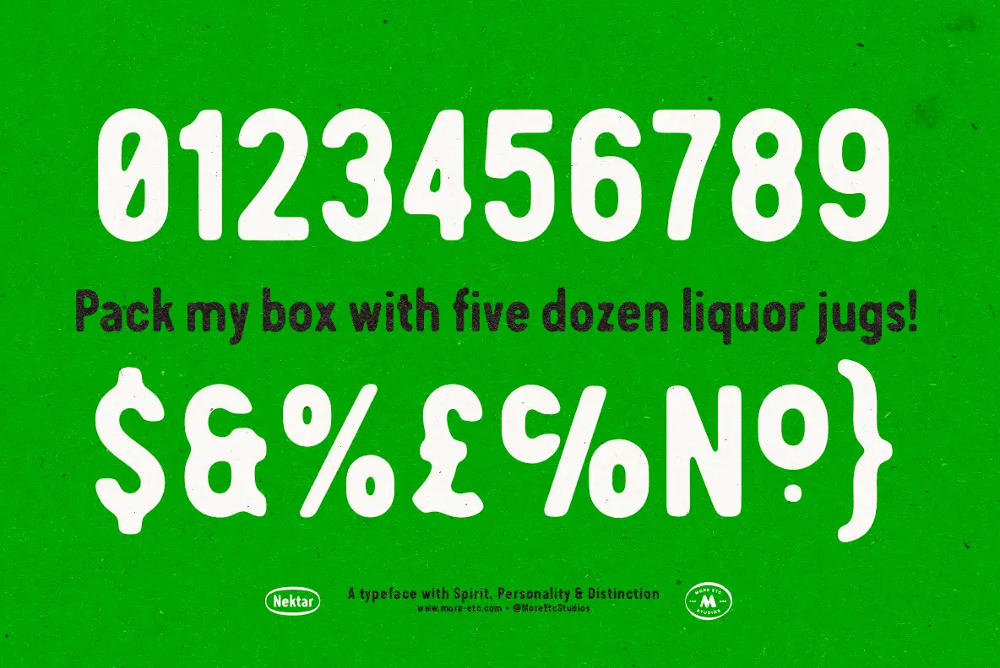

The source uses cream numerals and signs, dark pangram copy, a paper-grain ground, and a single quiet footer rule.
Three fitted specimen rows on the source’s vivid print ground.

The source uses cream numerals and signs, dark pangram copy, a paper-grain ground, and a single quiet footer rule.